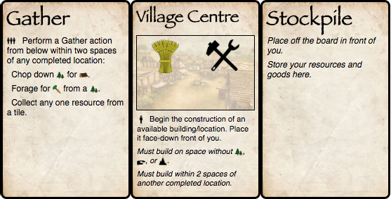

Your Main Actions
As a Mayor in Prosperius, you will always have two special actions available: Build and Gather.
Build
The Build action comes from your Village Centre. It allows you to begin the construction of a location. You must place a worker on Village Centre to use the action as normal, and it can be used any number of times per round.
Building Requirements
Note that certain locations have an Education requirement in the top-right of their card (but not on the back). This means that in order to begin the construction of that location, you must use an educated villager to take the Village Centre action.
Other locations require that you own a particular location at the time you begin construction. The location must also be completed. For example, to begin construction on the Master Tailor, you must have a completed Tailor ("Must own Tailor").
Location costs are in the top-right of the card. However, you may begin construction of any available location in the central supply (taking into account its education/location requirements), regardless of whether or not you have the required goods. The location will complete automatically when the needed goods are placed on the card.
In order to construct a location, use the Village Centre action. Then select a location from the central supply and place it face-down on your player board on a valid reachable tile.
A tile cannot be built on if it:
- has a Mountain, River, or Forest on it, or
- is across a river (unless you have a Bridge).
You can build on Saplings, Ore, Wheat, etc. Any such items on a tile are discarded if building over them.
Completing a Location
A location makes progress on its construction by placing resources on the symbols visible on the back-side of the card. How these resources are gained does not matter. In fact, having an under-construction building actually creates demand for those resources (see the Trade Phase).
After the last required resource is placed on the location, it is flipped face-up either:
- right away, if the last resource was placed during the Action phase, or
- at the end of the phase otherwise.
The resources should be discarded to the central supply immediately - they have been used.
Note: a few locations - such as a Farm - do not have building costs. They can simply be flipped face-up immediately when they are constructed.

Gather
The Gather action comes from your Gather card. You may use it any number of times per round. Place a worker on it to perform one of the four listed actions.
Gather Actions
Gather actions are the actions listed on the Gather card. The Ox Cart, for example, allows for the taking of two Gather actions on the same tile of your Player Board. The actions listed are your choices and can be used in combination.
When using Gather, place your worker on the tile being gathered from rather than the Gather card itself. This makes it easier for you and other players to see what your villager actually did.
Ox Cart
The Ox Cart is single use, and therefore you should place your worker on the card itself to indicate that it cannot be used again this round.
Note
The Stockpile provides no actions, but should be used to place any surplus goods.